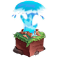

SomeMineGame.com IS STILL UNDER CONSTRUCTION. EXPECT BUGS.

What Is Geyser?
Allows players to join a Java server using their Java account on a Bedrock instance. Works by using a proxy to translate the events between the two editions.
How Do We Use Geyser?
We use it to add the foundation of the Java/Bedrock crossplay compatibility. We also use the Floodgate plugin to allow Bedrock accounts to join the server as well.
How Does Geyser Work?
Where Can You Get Geyser?
Geyser is free on their GeyserMC page. You can click the link below.
Geyser on GeyserMC